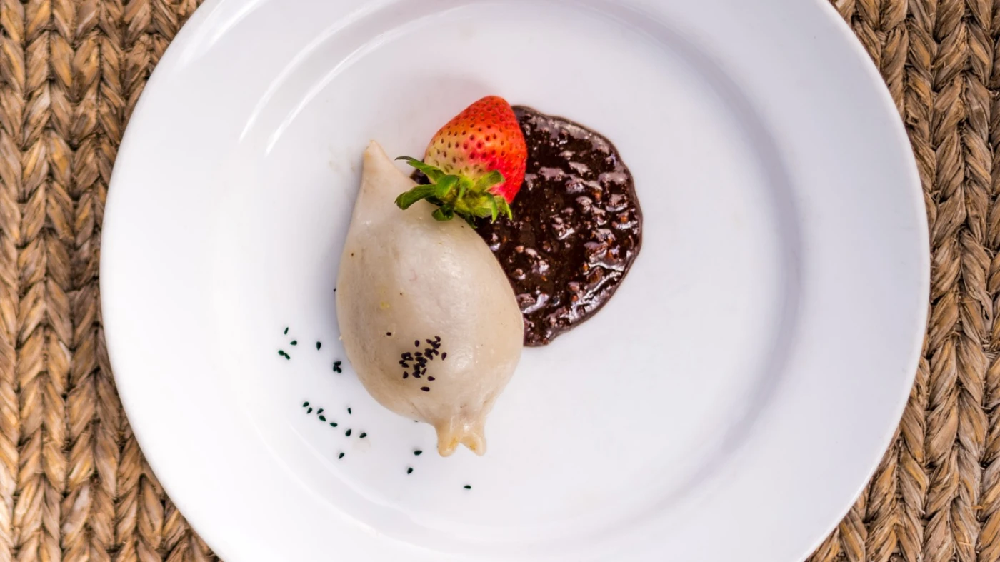

Traditional Yomari
Yomari is a special delicacy of the Newar community, prepared during the festival of Yomari Punhi. It is a steamed dumpling made from rice flour with a sweet filling of molasses and sesame seeds.
Ingredients
- 2 cups rice flour
- 1 cup warm water (as needed)
- 1 cup chaku (molasses candy), melted, or dark molasses
- 1/2 cup toasted sesame seeds, coarsely ground
- 2 tablespoons coconut flakes (optional)
Instructions
- In a small bowl, mix the melted chaku with the toasted sesame seeds and coconut flakes to prepare the filling. Set aside.
- In a large bowl, gradually add warm water to the rice flour, kneading continuously to form a soft, smooth, and pliable dough. Cover with a damp cloth and let it rest for 15 minutes.
- Take a small portion of the dough and shape it into a pointed, fish-like shape with a hollow center. Make the top opening wide enough to add the filling.
- Fill the hollow space with the chaku mixture, then carefully seal the top opening, pinching it to a point.
- Arrange the prepared Yomari on a steaming rack, making sure they don't touch each other.
- Steam for about 10-12 minutes until the dough is cooked through and no longer sticky to the touch.
- Serve hot. Yomari is best enjoyed fresh and warm.